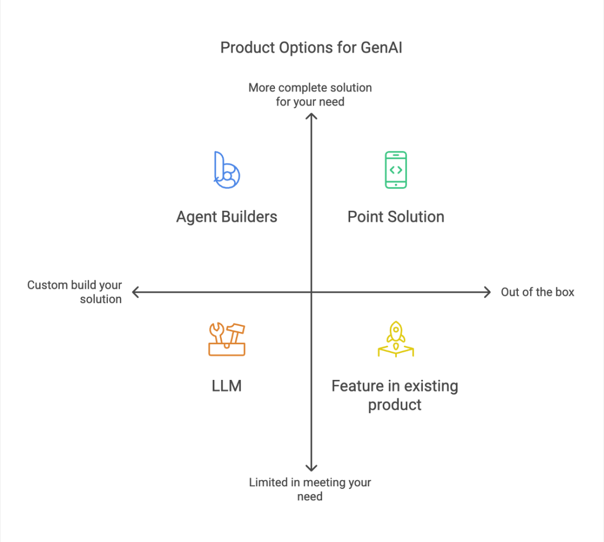
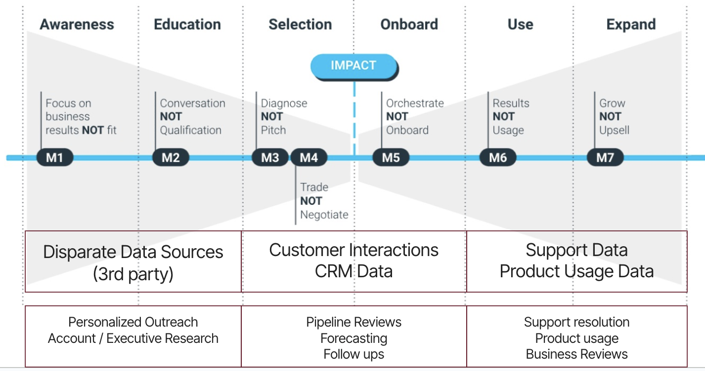

Why are there so many Top of Funnel Gen AI Use Cases?

I spent 20+ years in Enterprise Sales (pre-sales, direct sales and post-sales) and during all those years I spent very little time on Top of Funnel activities. Most of my time was spent working with large enterprise customers in moving opportunities through the sales cycle (technical evaluation, building the business case, getting stakeholder buy in, negotiation, customer success, driving product adoption etc.).
So when I started my own consulting company focused on leveraging Gen AI in GTM, I assumed I would find a lot of Gen AI opportunities in those mid-late funnel activities or post-sale activities. The reality could not be further from the truth, as a lot of my work with B2B SaaS companies has been on top of funnel activities. Whether it has been Account Based Marketing work or Lead Generation, they have been around adding opportunities to the pipeline.
Lately, I have been wondering why this is the case and I have a hypothesis that I am curious to get people's input on. But before we can get to the why, I need to talk about what I mean when I say Gen AI is being leveraged in GTM.
I've talked to a lot of companies and almost everyone says they are using Gen AI and they are absolutely correct, but it is not a binary answer. Almost everyone is using ChatGPT but that does not mean they are leveraging Gen AI to the fullest. Some say they are using Gong and even that does not mean they are leveraging Gen AI to the fullest. So I created this visual below to make sense of the various options that companies have when they want to leverage Gen AI.

Option 1 : Use an LLM (Chat GPT, Claude, Gemini etc.).
Option 2 : Use a feature in an existing product you own. Examples of this include Gong, LinkedIn AccountIQ etc.
Option 3 : They can buy a point solution that does something very specific but is a product built from the ground up to leverage Gen AI to solve a business need. Examples of this are Letter.ai for Revenue Enablement, Tribyl.com for Product Marketing, Salesmotion.io for Account Research etc.
Option 4 : Use agent builder platforms like Clay.com, Agent.ai, AnyQuest.ai, Agentforce etc. to orchestrate/automate workflows that connect to enterprise data and knowledge.
AI is only as good as the data it has access to.
The second visual that I want to share is overlaying the Customer Journey (and I like Winning By Design's Bowtie model) with key data sources at each stage of the journey and then mapping specific use cases at different parts of the Customer Journey.

My hypothesis is that the reason we see so many Top of Funnel use cases, is because of the sheer disparity of 3rd party data sources in the early stages of the customer journey.
As we move further down the funnel, most data is locked up in enterprise SaaS applications and in some ways companies have Gen AI solutions from the vendors they have relationships with.
If we look at the middle of the bowtie, the most important data source here are 'Customer Interactions' - Emails and Calls. The challenge for most organizations is that they don't have call data or if they do have call data it is stored in products like Gong and to make sense of the call data, they need to be correlated to the Calendar (I need to know who the meeting is with), opportunities in the CRM (what opportunity is this call related to), Emails (what emails are being sent as relates to this opportunity). It is hard to build all this from scratch and so the options for companies are to leverage products like Gong.
The other challenge with the middle of the bowtie, is that most companies do not capture call data. So they are left running AI on top of opinion in their CRM that is not that beneficial.
Similarly, if we look at the end of the bowtie and look at Support, Customer Success, Professional Services etc. - The data they depend on is stored in systems of record like ServiceNow or Zendesk (support), Amplitude (product usage) etc. To tackle these use cases one needs a combination of structured and unstructured data and again these vendors are best suited to tackle the need here.
So companies, can work with SIs / Professional Services from these companies to leverage Gen AI. If someone wants to build something custom, it is much more complicated and you need a deep knowledge of these underlying systems.
Which brings us to the Top of the bowtie and the wide variety of fascinating use cases. If we start looking at the data that is needed to run any GTM Motions here, it is all over the place -
Top of the bowtie motions depend on tons of disparate 3rd party data sources that are not locked within the enterprise, in systems of records
My hypothesis is that this disparity is why we need Agent Builder solutions like Clay.com, Agent.ai, AnyQuest.ai etc. to build workflows that span various data repositories, need to research across various sources etc. This is also where we have tons of manual workflows that can be automated.
Some examples -
If we look at 1 use case in the Middle of the Bowtie
Data Driven Pipeline Reviews and Forecasting - To do this well, we need opportunity data, call data and email data. Triangulating these 3 will lead to much better pipeline reviews as we can see a list of opportunities in the pipeline and extract MEDDICC information from calls and emails to populate CRM. We can find signals that can highlight risks.
If I were to build this using a combination of Clay + Salesforce, I can definitely bring a list of opportunities into Clay. If I now wanted to get all the emails, calls and future meetings for each opportunity, that gets complicated very quickly. Maybe I use the Opportunity Owner as the field to then find all calendar meetings and all emails and all calls they are on. This will now require integration with Calendar and Email and some call recording software. At which point, we are just rebuilding Gong and this is not as simple as building any of the above 5 use cases.
So, to wrap this up, if you have middle of the bowtie or end of the bowtie opportunities, look at leveraging your existing solutions and determine how Gen AI can drive value. If you have top of the bowtie needs, you are definitely going to need an Agent Builder solution.